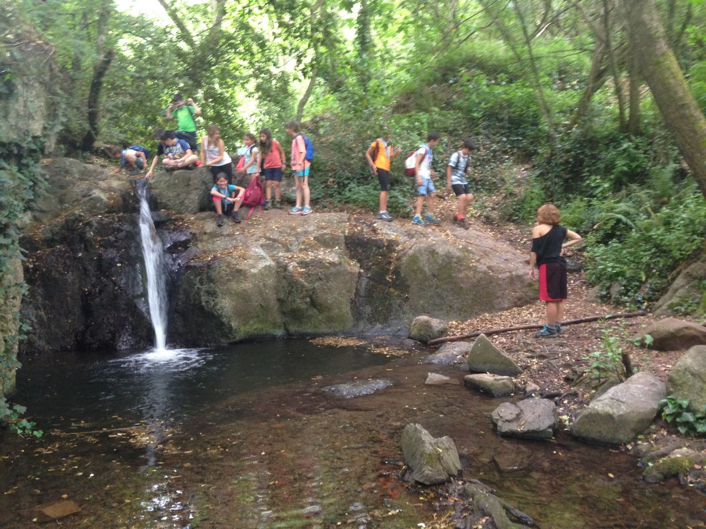

Excursió Llops!!!
14 de juny de 2017 · Unitat de Llops
La unitat de Llops és molt gran però molts
nens i nenes tenien la festa de final de curs,
així que van haver algunes baixes, vam anar
d'excursió amb una mica més de 10 llops. Vam
anar amb tren fins a la Garriga, a partir
d'allà ens quedaven per deban menys de 20
kilòmetres per anar de la Garriga al Figaró.
Durant el camí ens va ploure una mica però
feia tanta calor que gairebé tots els llops
es van acabar tota l'aigua que portaven, però
desprès de dinar vam trobar una font on vam
poder refrescar-nos i omplir les nostres ampolles.
Durant l'excursió vam començar a plantejar
el nou projecte per al 3r trimestre,
que el durem a terme aquesta setmana mateix.
Sota d'aquest post us deixem algunes de les
fotografies que vam fer a l'excursió.
L'activitat del cap de setmana 10-11 la vam fer al Cau.
Vam treballar la resolució de conflictes dintre de
la unitat i al final vam fer una mica de temps lliure.
Algunes llobes es van dedicar a treure la seva part
més artista. Els pares us vareu donar conta suposu:)
Per acabar dir que aquesta setmana és l'última que
els llops estaran junts com a unitat així que els esperen
sopresetes i tot un cap de setmana per endeban que passarem
tots junts!!!
